“A nossa mais elevada tarefa deve ser a de formar seres humanos livres, que sejam capazes de, por si mesmos, encontrar propósito e direção para suas vidas.”
— Rudolf Steiner
A Escola Waldorf Quintal Mágico quer formar seres humanos capazes de assumir o seu destino e de atuar em harmonia em sua vida e em sociedade. Somos mais que uma escola: nosso propósito é oferecer a possibilidade de desenvolvimento humano em toda a sua essência.
Seguimos os princípios da Antroposofia e somos geridos de forma participativa pela comunidade escolar. Nossa missão é promover a educação integral do indivíduo — artística, espiritual, emocional, física, social e intelectual — respeitando as fases de desenvolvimento de cada criança.
“Se a criança é capaz de se entregar por inteiro ao mundo ao seu redor em sua brincadeira, então em sua vida adulta será capaz de se dedicar com confiança e força a serviço do mundo.”Rudolf Steiner
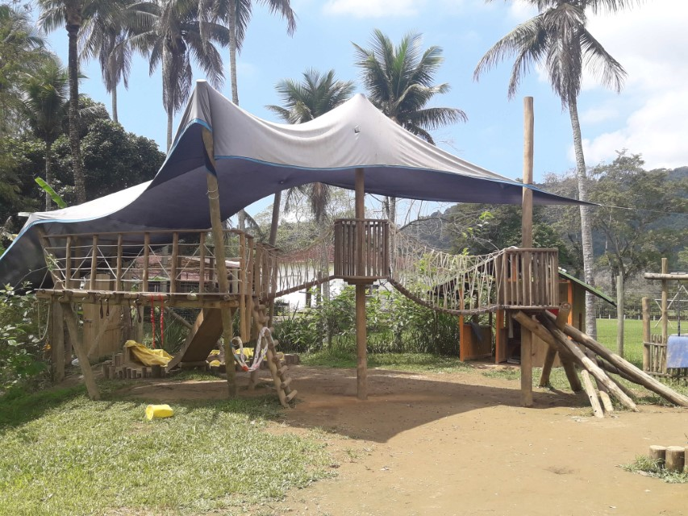
A pedagogia Waldorf surgiu na Alemanha, no contexto do pós-Primeira Guerra Mundial. Rudolf Steiner, seu criador, baseou-se na Antroposofia para desenvolver um método cujas premissas são o desenvolvimento humano em sua totalidade, a liberdade com responsabilidade, a diversidade cultural e social, o autoconhecimento e o conhecimento do universo.
Na Escola Waldorf Quintal Mágico, professoras e professores possuem formação específica na pedagogia Waldorf. O conteúdo curricular é o oficial do MEC, abordado de forma integrada: ele atua não só no intelecto, mas no corpo e nos sentidos, proporcionando uma formação completa que valoriza a vivência plena da infância.
A criança recebe e exercita o amor. Queremos proporcionar uma educação humanizada, amorosa e significativa, formando indivíduos aptos a cuidar da Terra, do próximo e de si mesmos.
A criança é livre — e a liberdade é um exercício. Criamos condições para preparar as crianças para o mundo, de forma amorosa e humanizada.
Criamos bases seguras que permitem o caminhar, oferecendo ferramentas para que as crianças desenvolvam sua individualidade, num espaço de entrega e confiança.
1 ano e meio a 3 anos e meio · “O mundo é bom”
O início de tudo: a base do aprendizado é a brincadeira, e a criança cria hábitos pela imitação do adulto. O ambiente representa uma casa e a sala é uma grande família, com brinquedos de materiais naturais — madeira, tecido e lã. O brincar livre desenvolve capacidades motoras e cognitivas, a interação social, a criatividade e a imaginação.
3 anos e meio a 6 anos e meio · “O mundo é bom”
Os Jardins Manacá, Aurora e Ninho são a continuidade natural desse ambiente acolhedor. O aprendizado se dá de forma lúdica, respeitando o tempo de cada criança: cantos, rodas, jogos, dramatizações, narração de histórias e arte permeiam as brincadeiras e as vivências das épocas do ano.
1º ao 5º ano · “O mundo é belo”
Por volta dos sete anos, a prontidão escolar leva a criança à alfabetização e ao conhecimento. As professoras despertam o real interesse pelo mundo através de narrativas repletas de imagens, habilidades manuais, música, rodas rítmicas e festividades — sempre seguindo a grade curricular oficial do MEC. Cada turma tem até 20 estudantes, acompanhados pela mesma professora ou professor ao longo do ciclo.
6º ao 8º ano · Novos desafios
Em 2020, a escola deu o passo para o Fundamental II — momento em que o jovem se aproxima da compreensão do mundo com maior consciência, com o nascimento da crítica e dos questionamentos inerentes à vida. Os conteúdos artísticos ganham novos desafios, ampliando as habilidades já conquistadas.
A escola Quintal Mágico nasceu da ideia de um grupo de pais que acreditavam em uma educação diferenciada e de qualidade, acessível a diferentes realidades socioeconômicas. Em fevereiro de 2007, criaram a Associação Quintais — organização da sociedade civil sem fins lucrativos, mantenedora da escola — e abraçaram a pedagogia Waldorf para concretizar esse sonho.
Com o passar dos anos, a escola foi se desenvolvendo e recebendo novas famílias, amigos e crianças. Hoje, a Escola Waldorf Quintal Mágico está sediada em Paraty-RJ e atende 196 crianças de diferentes realidades socioeconômicas. A escola é gerida de forma participativa através de comissões temáticas voluntárias, com o sonho de oferecer uma educação voltada à cultura de paz — “uma escola de todos para todos”.
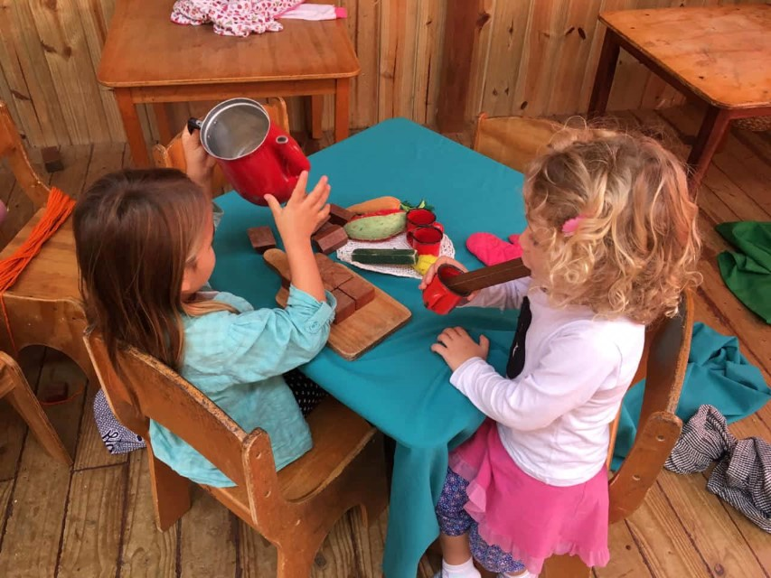
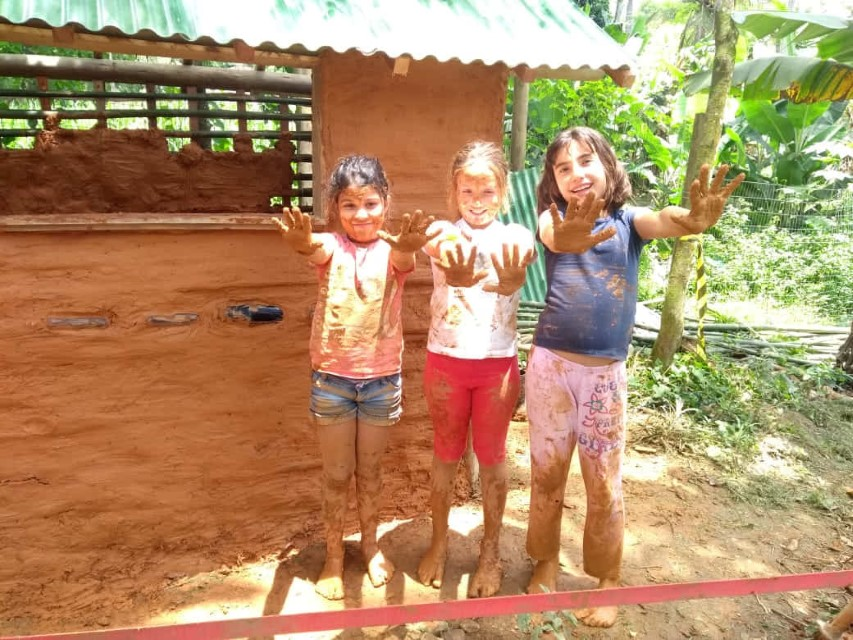
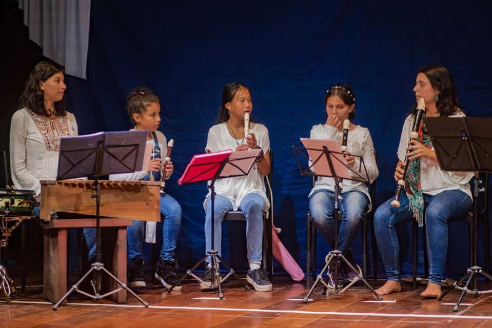
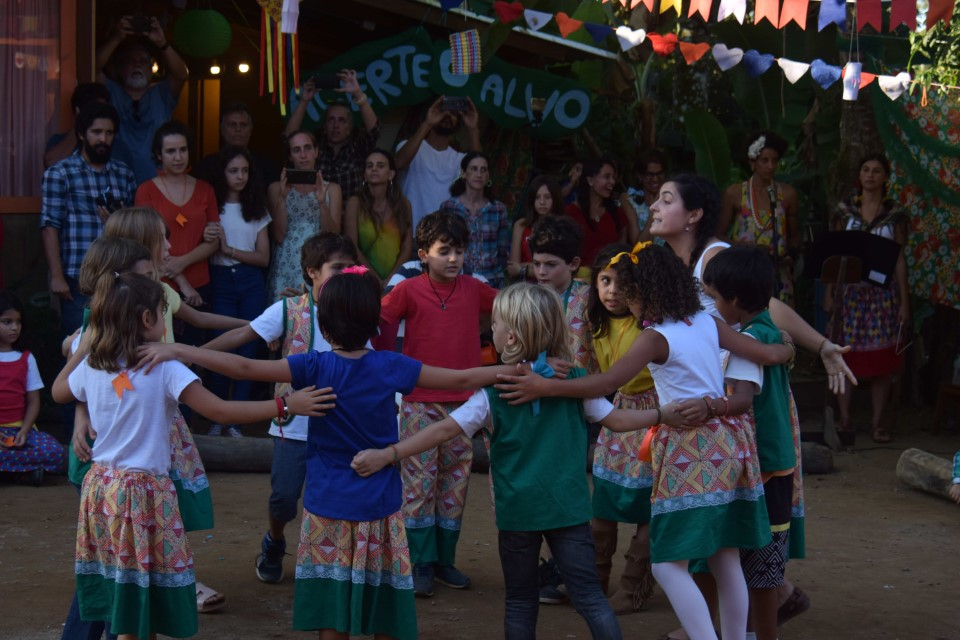
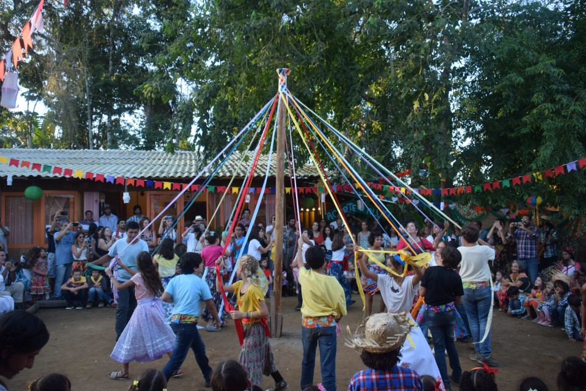
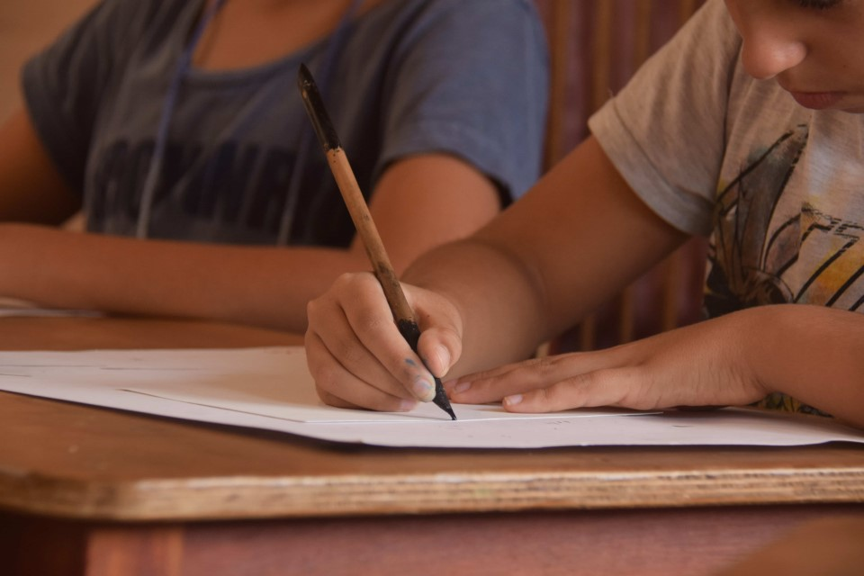
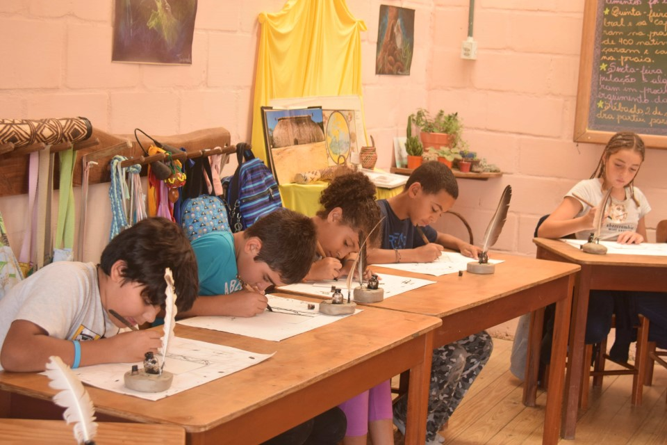
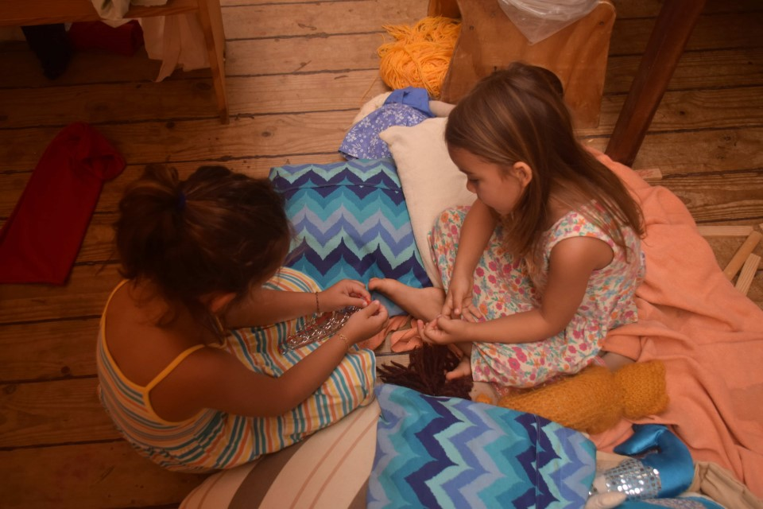
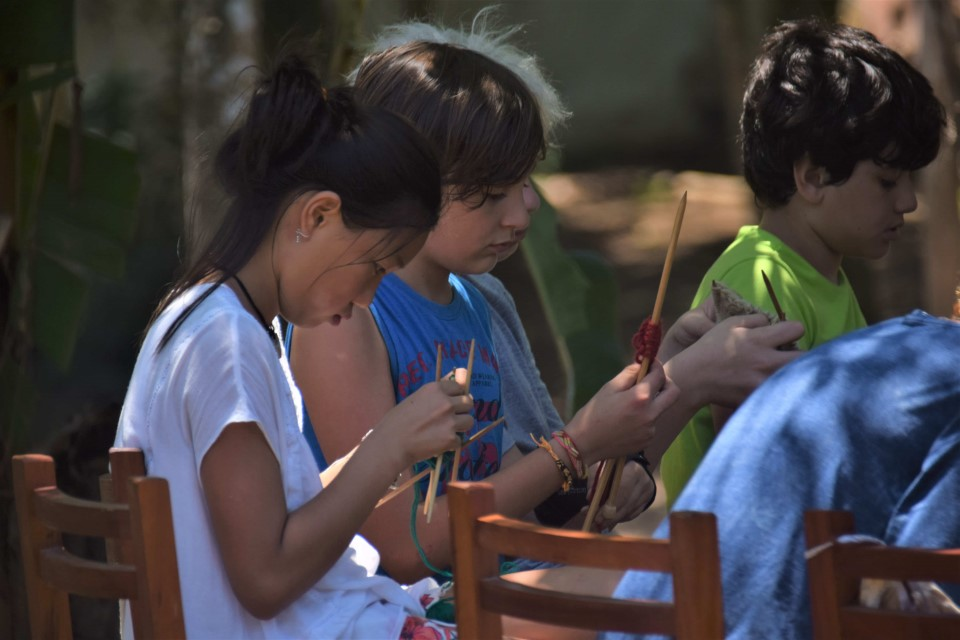
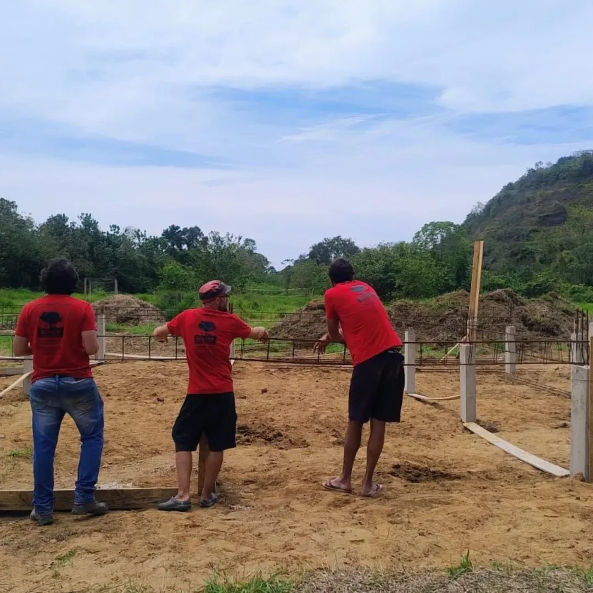
Concluímos a primeira etapa de construção da nova sede da Escola Waldorf Quintal Mágico! Você pode contribuir com a obra pela nossa campanha de financiamento coletivo no Grupo Saúva — e acompanhar o dia a dia da construção, as festas e as vivências da escola no nosso Instagram.
Atendemos do Maternal (a partir de 1 ano e meio) ao Ensino Fundamental II (até o 8º ano): Maternal, Jardins de Infância (Manacá, Aurora e Ninho), Fundamental I e Fundamental II.
Sim. O conteúdo curricular é o oficial do Ministério da Educação, trabalhado de forma integrada pela pedagogia Waldorf — atuando não só no intelecto, mas no corpo e nos sentidos.
O primeiro passo é uma conversa: chame a secretaria no WhatsApp ou preencha o formulário de interesse. A partir daí agendamos uma visita para a família conhecer a escola e a pedagogia.
Sim. Por acreditar na diversidade de uma comunidade inclusiva, cerca de 40% das vagas são oferecidas a alunos bolsistas, com bolsas de 20% a 100%, mantidas por um Fundo de Bolsas orientado pelos princípios da Fraternidade Econômica.
A escola é gerida de forma participativa, através de comissões temáticas voluntárias compostas por pessoas de formações diversas. Para as famílias, é uma oportunidade de viver em comunidade, aprender e trocar experiências.
Na Estrada Paraty–Cunha, km 1 — Paraty-RJ, CEP 23970-000. Ver no mapa.
Para manter as bolsas de estudo que garantem uma escola diversa e inclusiva, contamos com o apoio de pessoas físicas e jurídicas. Toda contribuição ajuda a cuidar dessa semente.
Você pode doar por PIX para a conta da Associação Quintais (mantenedora da escola), CNPJ 08.996.518/0001-39, contribuir com a campanha da nova sede no Grupo Saúva, ou falar com a secretaria para outras formas de apoio.
00020126360014BR.GOV.BCB.PIX0114089965180001395204000053039865802BR5919ASSOCIACAO QUINTAIS6009SAO.PAULO62070503***6304CC61
A melhor forma de conhecer a escola é visitá-la. Agende uma conversa com a nossa secretaria e venha viver uma manhã no nosso quintal.
Pode nos escrever suas dúvidas por qualquer um dos nossos canais de contato.